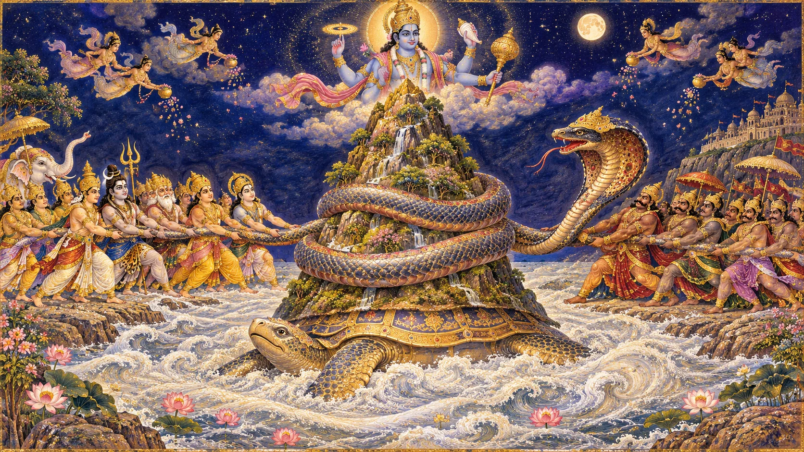
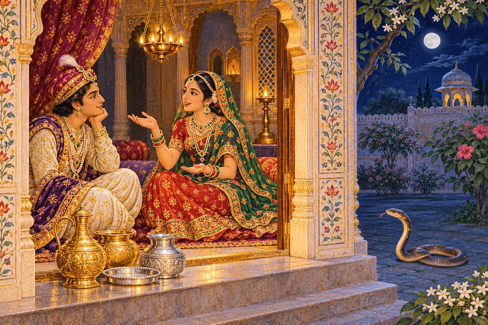
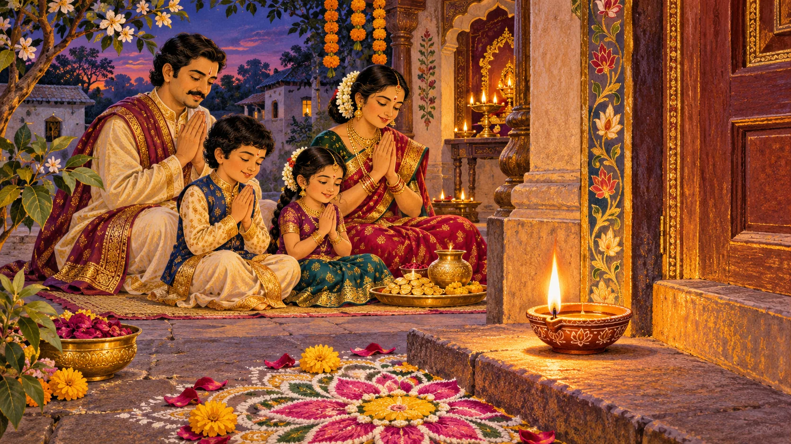
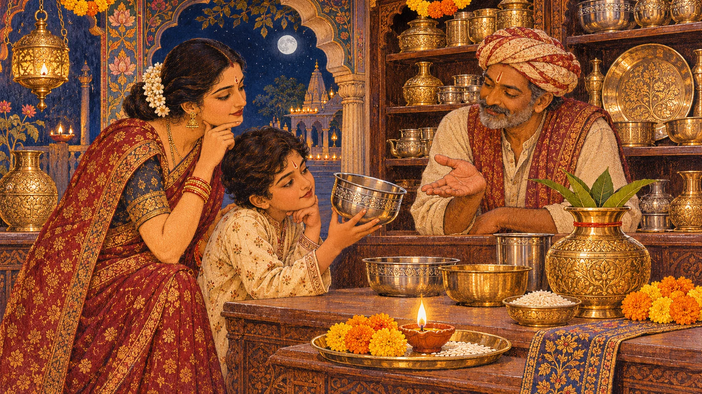
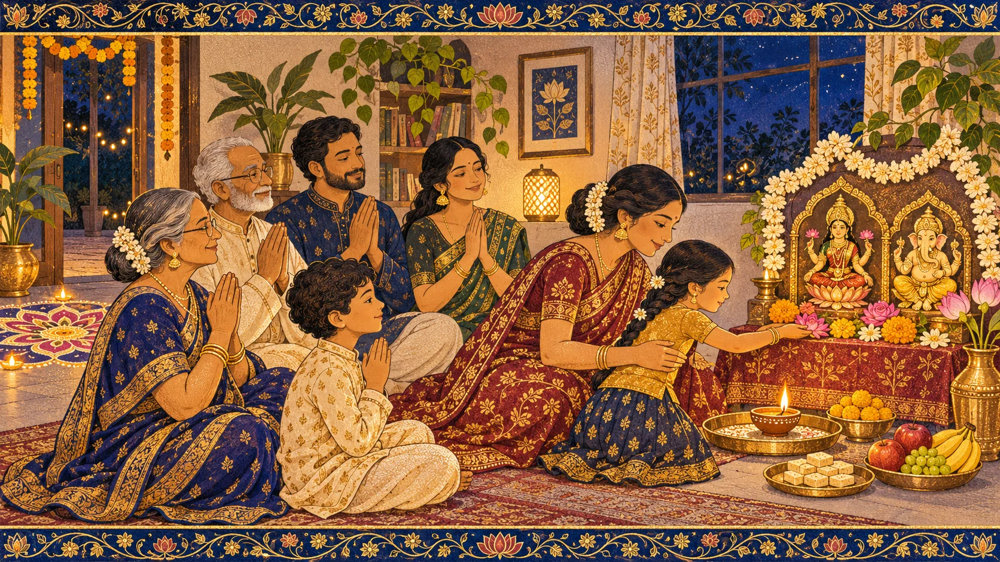

धनतेरस का दीप आरोग्य, संतोष और बाँटने की भावना को घर में स्थान देने का निमंत्रण है।
धनतेरस कब है?
शुक्रवार, 6 नवंबर 2026
कृष्ण पक्ष की त्रयोदशी
अपने शहर में पूजा का समय
पूजा का मुहूर्त आपके नगर के सूर्यास्त और पारिवारिक परंपरा के अनुसार देखें। नीचे पंचांग खोलें, अपना शहर चुनें और वर्ष 2026 की पुष्टि करें।
अपने शहर का पंचांग देखें ↗ऊपर दी गई तिथि दृक पंचांग की नई दिल्ली सूची का संदर्भ है। स्थानीय तिथि और मुहूर्त अलग हो सकते हैं।
तिथियाँ अलग क्यों हो सकती हैं?
त्योहार चंद्रतिथि और पूजा के लिए निर्धारित समय पर निर्भर करते हैं। सूर्योदय, सूर्यास्त और क्षेत्रीय परंपरा के कारण विदेश में किसी पर्व का दिन भारत से अलग हो सकता है। अपने शहर और परंपरा का पंचांग देखें।
दिवाली की प्रथम देहरी

कार्तिक कृष्ण पक्ष की त्रयोदशी पर दीपावली के उत्सव की पहली रोशनी घरों में उतरती है। यही धनतेरस या धनत्रयोदशी है। ‘धन’ का अर्थ संपत्ति और ‘त्रयोदशी’ का अर्थ चंद्रपक्ष की तेरहवीं तिथि है। पर इसका संदेश केवल सोना खरीदना नहीं है। सच्ची समृद्धि में स्वास्थ्य, अन्न, विश्वास, संतोष, उदारता और परिवार की सुरक्षा भी शामिल हैं।
इस दिन माता लक्ष्मी, धन के संरक्षक कुबेर, आयुर्वेद के आराध्य भगवान धन्वंतरि और यमदीप की परंपराएँ एक साथ मिलती हैं। अलग-अलग क्षेत्रों और परिवारों में इनकी विधियाँ भिन्न हो सकती हैं। इन विविध परंपराओं को एक ही कथा में समेटना आवश्यक नहीं है।
समुद्र मंथन और अमृत का उदय

समुद्र मंथन की प्रसिद्ध कथा में देव और असुर मिलकर क्षीरसागर का मंथन करते हैं। मंदराचल पर्वत मथानी बनता है और वासुकि नाग रस्सी। अनेक अद्भुत रत्न प्रकट होते हैं, पर अमृत से पहले भयंकर विष भी निकलता है, जिसे शिव धारण करते हैं। कथा याद दिलाती है कि कल्याण का मार्ग कभी-कभी कठिन परीक्षा से होकर गुजरता है।
मंथन से अमृतकलश सहित भगवान धन्वंतरि के प्रकट होने का वर्णन मिलता है। देवी लक्ष्मी के समुद्र से प्राकट्य को भी दीपावली की परंपराओं से जोड़ा जाता है। इसका संकेत है कि स्वास्थ्य और समृद्धि धैर्य, सहयोग और विवेक से टिकती हैं। विभिन्न ग्रंथों में रत्नों का क्रम और विवरण अलग-अलग मिलता है।
कथा का ग्रंथ-संदर्भ: भागवत पुराण 8.8। यह धार्मिक आख्यान है; इसे त्योहार के ऐतिहासिक आरंभ की निश्चित तिथि न समझें।
धन्वंतरि: आरोग्य ही अनमोल धन

भगवान धन्वंतरि को दिव्य वैद्य और आयुर्वेद की परंपरा का आराध्य माना जाता है। उनके स्वरूप में अमृतकलश और उपचार से जुड़े चिह्न दिखाई देते हैं। इसी कारण धनतेरस को धन्वंतरि त्रयोदशी भी कहा जाता है।
इस पर्व पर आरोग्य की प्रार्थना के साथ व्यावहारिक देखभाल भी सार्थक है—बुजुर्गों का हाल पूछना, पौष्टिक भोजन बनाना, दवाएँ चिकित्सकीय सलाह के अनुसार लेना और विश्राम के लिए समय निकालना। पूजा चिकित्सा का विकल्प नहीं है; दोनों का अपना स्थान है।
राजकुमार, सर्प और प्रकाश की लोककथा

एक लोकप्रिय लोककथा में राजा हिम के पुत्र की कुंडली में विवाह के चौथे दिन सर्पदंश से मृत्यु का योग बताया गया था। नववधू ने भय के आगे हार नहीं मानी। उसने द्वार पर आभूषण और सिक्के रखे, दीप जलाए और गीत-कथाओं से पति को पूरी रात जगाए रखा।
कथा के अनुसार यम सर्प रूप में आए, पर दीपों की चमक और आभूषणों के तेज से ठिठक गए; सुबह हो गई और राजकुमार बच गया। इस लोककथा के रूपांतर अलग हैं। इसका भाव साहस, प्रेम और सजगता है—इसे दुर्घटना या बीमारी से सुरक्षा की वास्तविक गारंटी नहीं मानना चाहिए।
यह घरों में सुनाई जाने वाली लोककथा है; इसका कोई निश्चित श्लोक-संदर्भ यहाँ नहीं दिया गया है।
द्वार पर रखा यमदीप

कई परिवार धनतेरस की संध्या को यमदीपदान करते हैं। घर के प्रवेश-द्वार के पास या किसी सुरक्षित स्थान पर छोटा दीपक रखा जाता है। कुछ परंपराओं में उसका मुख दक्षिण दिशा की ओर रखा जाता है। परिवार की कुशलता और दीर्घायु के लिए प्रार्थना की जाती है।
विदेश में अपार्टमेंट या किराए के घर में सुरक्षित स्थान पर दीप जलाएँ; जहाँ खुली लौ की अनुमति न हो, वहाँ इलेक्ट्रिक दीपक भी उपयोगी है। दीपक को पर्दों, बच्चों और पालतू पशुओं से दूर रखें तथा कभी बिना निगरानी न छोड़ें।
नया बर्तन खरीदने की परंपरा

धनतेरस पर नया बर्तन, चाँदी का सिक्का, आभूषण या घर की उपयोगी वस्तु लाने की परंपरा है। यह समृद्धि के स्वागत और गृहस्थी की जिम्मेदारी का प्रतीक है। अपनी सामर्थ्य से अधिक खर्च करना कोई धार्मिक आवश्यकता नहीं है।
विद्यार्थी या युवा परिवार के लिए एक साधारण कटोरी, बजट लिखने की कॉपी या जरूरतमंद की सहायता भी इस दिन का अर्थ प्रकट कर सकती है। केवल दिखावे के लिए कर्ज लेना त्योहार की मूल भावना से दूर ले जाता है। सोना-चाँदी खरीदें तो शुद्धता, मूल्य और रसीद अवश्य जाँचें।
घर पर सरल धनतेरस पूजा

घर के स्वच्छ स्थान पर दीपक, पुष्प, जल, फल या मिठाई रखें। अपने कुलाचार के अनुसार लक्ष्मी, गणेश, धन्वंतरि या कुबेर का चित्र स्थापित कर सकते हैं। स्नान कर स्वच्छ वस्त्र पहनें और स्थानीय प्रदोषकाल में सुरक्षित रूप से दीप प्रज्वलित करें।
पुष्प और नैवेद्य अर्पित करके प्रार्थना करें—“हमारे घर में आरोग्य, ईमानदार आजीविका, विवेक और बाँटने की भावना बनी रहे।” परिवार की परंपरा के अनुसार मंत्र, आरती और प्रसाद करें। चाहें तो यमदीपदान भी करें। सभी हिंदू परिवारों के लिए एक ही पूजा-विधि अनिवार्य नहीं है।
दुनिया में जहाँ भी आपका घर हो
छोटा अपार्टमेंट, साझा रसोई या परिवार का घर—हर जगह दीपावली का पहला दीप जल सकता है। अपने स्थान और सामर्थ्य के अनुसार तैयारी करें। पूजा की योजना अपने शहर के पंचांग से बनाएँ; सामुदायिक उत्सव किसी सुविधाजनक अलग दिन भी रखा जा सकता है।
बच्चों के साथ कथा पढ़ें, दूर के परिजनों से बात करें और किसी जरूरतमंद के लिए अन्न या उपहार रखें। धनतेरस के बाद दीपावली की अन्य परंपराएँ भी जानें।
स्रोत और तिथि-जाँच
संदर्भ तिथियाँ 5 नवंबर 2026 को दृक पंचांग की नई दिल्ली सूची से पुनः जाँची गईं। स्थानीय तिथि और मुहूर्त के लिए अपना शहर चुनें। ग्रंथ की कथा और घरेलू लोककथा को अलग-अलग पहचाना गया है।